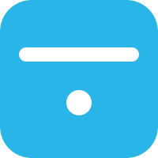
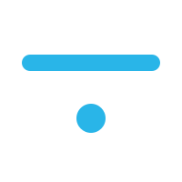

Bayan logo directions
Three differentiated directions for the Bayan brand mark. Each retains the existing cyan #29B5E8 equity but trades the current crowded mark (bars + line + pie + frame) for a single, scalable concept. Pick one — or mix (e.g. A's mark + C's wordmark).
Ascending bars in a soft square
The disciplined refinement. Refines the existing chart-bar metaphor into a single, confident geometric mark. Four ascending bars in a rounded container. One color, no gradients, no drop shadow. Closest to the current logo — easiest to roll out without a brand re-launch.
The letter ب — abstracted
Bayan (بَيَان) is Arabic for clarity / exposition — and starts with the letter ب (a horizontal stroke with a single dot beneath it). This direction abstracts that glyph: the stroke reads as an analytic baseline, the dot as a single data point. Brand identity = brand name's first letter in its own script. Scales beautifully to 16 px because there are only two shapes.


bayan ·
The Stripe / Linear / Vercel pattern. The wordmark is the identity. Lowercase "bayan" in a tight geometric grotesque (Inter Tight 600), with a single cyan dot acting as both a period and the brand's signature data point. No separate icon — the wordmark stands alone in headers, emails, and OG cards. (Favicon falls back to a standalone "b" + dot.)
Brand DNA preserved
Cyan primary #29B5E8 kept across all three. The cyan ramp (#7DD3F3 → #0598CC) is reserved for chart palettes, not the logo itself.
What we cut
Drop shadow filters, multiple opacity layers, gradient fills, the line-graph overlay, the pie chart accent, the dashboard frame, and the decorative tick lines — every one of those was a textbook AI-slop tell that didn't survive contact with a 16-px favicon.
How to pick
A if you want the safest path and minimum disruption. B if you want the most distinctive identity and lean into Bayan's Arabic etymology. C if Bayan is repositioning toward a typographic, dev-tool aesthetic. Mixing — e.g. A's mark with C's wordmark — is also valid.